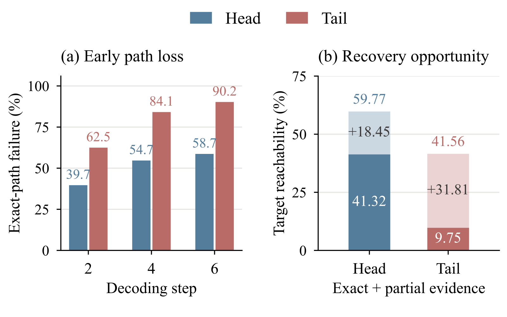
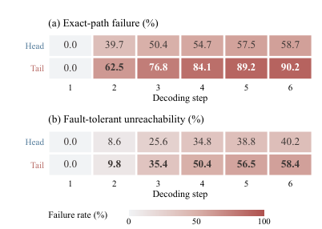
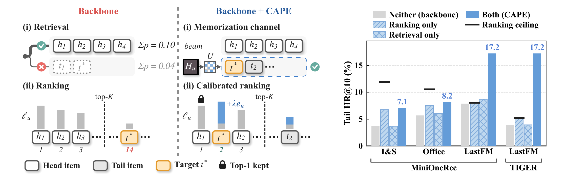
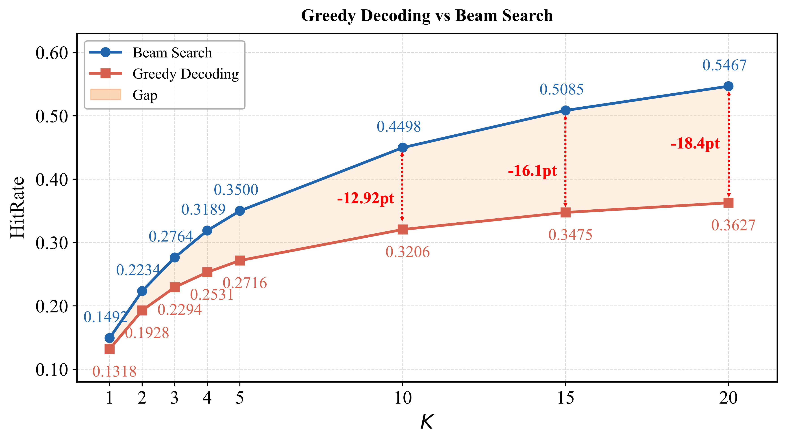
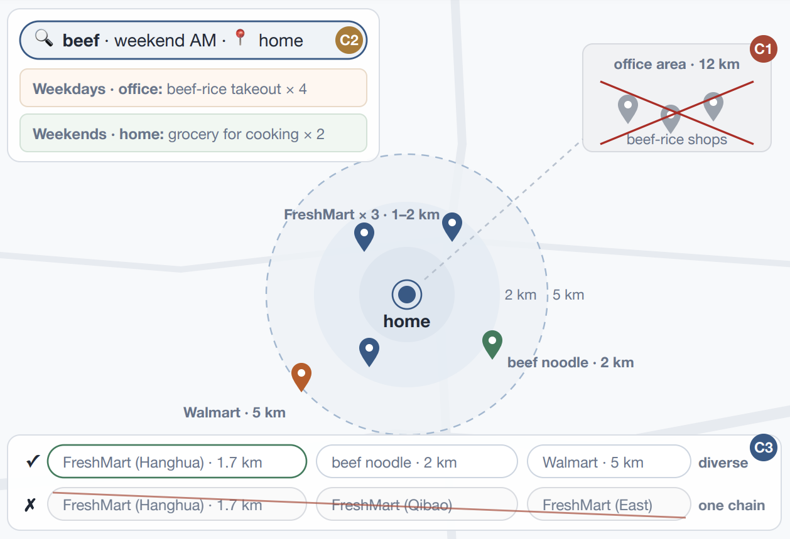
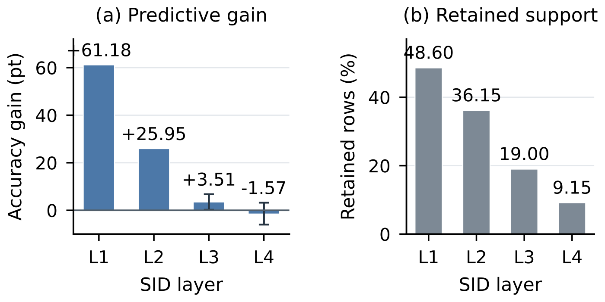
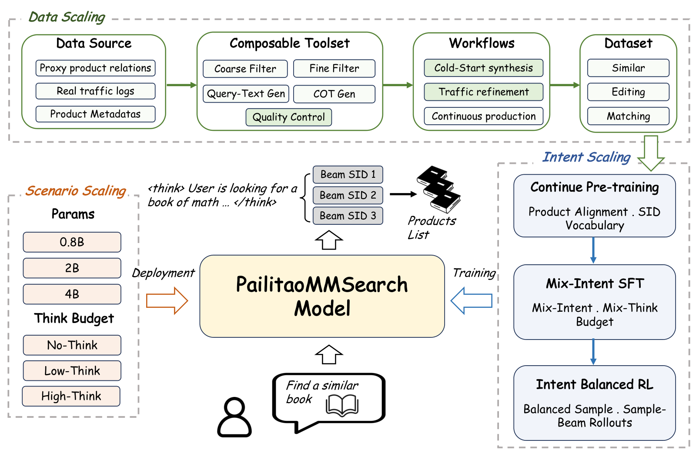
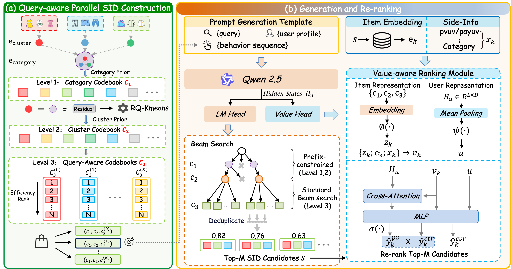

Contents · 9 sections
1Where long-tail items get lost2How codes are built: residual vs parallel3Close enough can count4Keeping long-tail prefixes in the beam5Walking through it: how long-tail item B gets found6Results7Online results and speed8What this means for people building generative retrieval9LimitationsSHARE
The model has seen the niche item, so why can't it retrieve it? ReSID keeps a seat for long-tail items in the beamSuppose a user's next click is a small office product that almost nobody has bought. A generative retrieval model reads the user's history, writes out an item code one position at a time, and then looks that code up in the catalog. If a single position is wrong, the item is not found.
The authors, from Alibaba International Digital Commerce Group and Nankai University, measured this on the Amazon Industrial dataset. When the target is a popular item, 41.32% of requests find an exactly matching code among the generated results. When the target is a long-tail item, only 9.75% do.
Generative retrieval first turns each item into a short sequence of discrete tokens called a Semantic ID (SID). The model then generates an SID position by position from the user history, beam search keeps only the highest-scoring prefixes at each step, and only items whose code matches exactly are returned. Existing long-tail methods mostly change training: CRAB (splits overly popular codes), Ghost (lets tail items inherit popular prefixes followed by longer suffixes) and SA2CRQ (adaptive code lengths for tail items). Inference stays standard beam search plus exact matching. ReSID looks at the whole retrieval chain instead: it uses long parallel SIDs, pushes down popular prefixes and adds a user-interest score inside beam search, and allows up to 3 mismatched positions at matching time. On two public datasets it uses a beam of width 20 (baselines use 200), gets the best long-tail Recall and NDCG, and stays close to the strongest baseline overall. Replacing a TIGER-style generative retriever online raised ad revenue by 1.3%.
A large part of the long-tail failure happens at inference: beam search prunes the item's prefix early, and exact matching throws away sequences that are off by a few positions. The evidence comes from public datasets of about 3,500 items and one advertising platform.
Where long-tail items get lost
First, when does beam search lose the target? On Industrial, with 6-position SIDs, 16 codes per position, and a beam of width 20, the authors checked at every step whether the target's prefix was still in the beam.

After only two tokens, 62.5% of long-tail targets have already dropped out of the beam. By step 6, the loss rate is 90.2% for long-tail targets and 58.7% for head targets. Popular items appear more often in training, the model gives their prefixes higher scores, and a narrow beam fills up with them quickly.
A wider beam helps, but every request then costs more. The paper's question is whether more long-tail items can survive without widening the beam.
The authors examined three steps of the chain: how codes are built, how generated sequences are matched to items, and how beam search prunes. Each step yields one finding, and each of ReSID's three components answers one of them.
How codes are built: residual vs parallel
Mainstream SIDs are built by residual quantization (TIGER and OneRec both work this way). The first code describes roughly where the item vector sits, the second code quantizes what the first left unexplained, and every later code depends on the earlier ones.
Parallel SIDs work differently. The item's text embedding goes through an MLP, and the resulting vector is split evenly into 6 segments. Each segment has its own codebook and picks its own nearest codeword. The third code describes only the third segment and does not depend on what the first two codes chose.
The authors compared the two schemes with equally large code spaces, under a short configuration (3 positions, 256 codes each) and a long one (6 positions, 16 codes each).
Parallel codes were better on every long-tail metric, which shows that the way codes are built matters even when the code space is the same size. In the short configuration, long-tail Recall@200 rose from 8.62% to 13.02%. In the long configuration, long-tail effective coverage rose from 4.70% to 9.16%. Effective coverage is the share of distinct target items retrieved correctly at least once.
The authors' explanation is that in residual codes, popular items already dominate the early codes, and that bias is passed down level by level through the residuals. In parallel codes, a biased code only affects its own position.
Close enough can count
Parallel codes bring a second benefit. A generated sequence may be wrong in some positions, yet the correct positions still point to the right item features.
Same setup: Industrial, beam 20, long 6×16 codes. Requiring an exact match, long-tail reachability is 9.75%. Allowing 1 to 3 mismatched positions raises it to 41.56%, which shows that many "wrong" sequences are only a few positions away from the target. More than a third of the missed long-tail targets share at least half of their tokens with one of the generated sequences.
So the authors relax the matching rule: an item is retrieved if its SID differs from some generated sequence in at most 3 positions. On the same beams, long-tail Recall@200 goes from 9.75% to 20.39%, and long-tail effective coverage from 9.16% to 22.45%.
Can relaxed matching rescue every long-tail item, then? No. With 3 mismatches allowed, 58.4% of long-tail targets are still unreachable. Relaxing further gains little and lets in irrelevant items.

The bottom half of Figure 4 checks exactly this: is there still a prefix in the beam that, once completed, lands within 3 positions of the target? At step 4, 65.2% of head targets still have such a prefix, while 50.4% of long-tail targets have none left. As long as the matching rule stays at 3 mismatches, these items cannot be recovered at matching time. Beam search itself has to change.
Keeping long-tail prefixes in the beam
ReSID freezes the recommendation model and adds two signals to the beam-search score. Only the user-interest score needs one extra linear layer to be trained.
The first signal is popularity calibration. From the training data, the authors count how often each token follows a given prefix and call this the prior π. Before scoring, they subtract λ × log π from the model logits (the paper uses λ = 0.5). For a common branch, log π is close to 0 and little is added back. For a rare branch, log π is very negative and more is added back.
With only this step, the beam would fill up with rare prefixes that have nothing to do with the user. So the second signal is a user-interest score. A linear layer turns the encoder's output after reading the user history into a user vector, trained to move toward the text vector of the target item. During decoding, the interest score Φ of a prefix is the average similarity between the user vector and all real items under that prefix (the paper uses a log-mean-exp).
Each time a token is added, the new prefix's score is: parent score + calibrated log probability + β × (Φ of the new prefix − Φ of the parent), with β = 0.4. The last term rewards branches where "writing this position brings the candidate items closer to this user". At each step, beam search still keeps only the top B valid prefixes.

Walking through it: how long-tail item B gets found
The codes below come from Figure 5(c) of the paper. The generated sequence and the codes of items A, B and C are from the paper; the branch 2-8-1-6 and the scores in steps 2 and 3 are illustrative.
Step 1, the target. The user's next click is long-tail item B, whose parallel SID is 2-5-1-9-4-7. Each position is the code picked by its own vector segment.
Step 2: at decoding step 4 the beam is full, and the last slot is contested by two children of the same parent prefix 2-8-1. One is 2-8-1-3, which differs from B's first four positions in only two, so once completed it can still land within 3 positions of B. The other is 2-8-1-6, a popular branch unrelated to this user. Both share the same parent score and the same softmax normalizer, so those cancel and only this position's score matters.
In the model's raw log probabilities the popular branch leads, −0.5 to −1.7, a gap of 1.2. Popularity calibration looks at how common this token is: the prior is 0.5 for the popular branch and 0.05 for the rare one. Because the amount added back is −0.5 × log π, the popular branch gains only 0.35 and the rare one gains 1.5. The scores become −0.15 and −0.2, so the gap shrinks from 1.2 to 0.05, and the popular branch is still slightly ahead.
Step 3: the user-interest score decides. Items under 2-8-1-3 are, on the whole, closer to this user than items under 2-8-1, so Φ rises by 0.5. Items under 2-8-1-6 are further away, so Φ drops by 0.5. Multiplied by β = 0.4, one side gains 0.2 and the other loses 0.2. The final scores are 0 and −0.35, so 2-8-1-3 stays in the beam. With popularity calibration alone, the slot would still have gone to the popular branch.
Step 4: decoding continues to position 6, and this prefix is completed as 2-8-1-3-4-7. Exact matching would return only item A, whose code is identical, and B would be thrown away.
Step 5: partial matching counts mismatched positions item by item. A is 2-8-1-3-4-7, 0 mismatches. B is 2-5-1-9-4-7; positions 2 and 4 differ, so 2 mismatches. C is 6-5-0-3-4-0, 4 mismatches, over the limit of 3, so it is not retrieved. Fewer mismatches rank higher, so A comes first and B second; ties are broken by the score of the generated sequence they matched.
In this walk-through, steps 2 and 3 decide whether B's "neighbor" survives to the end, and step 5 recovers B from that neighbor. The paper's analysis shows the same division of labor: among long-tail targets that were unreachable within 3 positions under standard beam search but found by ReSID, 9 of 10 on Industrial were hit through partial matching.
Results
The paper compares methods on Amazon Industrial (3,686 items), Office (3,459 items) and an In-house dataset from an e-commerce advertising platform (about 4.17 million items). On the public datasets, items that appear 1 to 6 times as training targets count as long-tail. They make up more than half of the catalog but get only 20–22% of training interactions, so the model naturally leans toward popular items. Baselines are three common SID methods (RQ-VAE, TIGER, OneRec) and three long-tail methods (CRAB, Ghost, SA2CRQ), all on the same lightweight encoder–decoder backbone.
ReSID is best on every long-tail metric on all three datasets. Against Ghost, the strongest long-tail baseline, it is on average 41.2% higher in long-tail Recall and 36.6% higher in NDCG on the two public datasets. On In-house, long-tail Recall@200 rises from 18.94 to 36.62.
Overall metrics tell a different story. On the public datasets ReSID ranks second in overall R@50 and is on average 6.7% (Recall) and 6.2% (NDCG) behind the best method per metric. On Industrial, for example, OneRec's overall R@200 is 36.66 against ReSID's 33.77, while long-tail R@200 is 14.68 against 21.22. So on small catalogs ReSID trades a little overall accuracy for a clear long-tail gain. On In-house it also leads overall, with R@200 rising from 37.65 to 48.28.
The ablation is run on Office, removing one component at a time from the full model:
| Variant | Long-tail R@200 | Relative change | Long-tail exposure coverage |
|---|---|---|---|
| Full ReSID | 20.54 | – | 99.31 |
| No popularity calibration | 18.76 | −8.7% | 97.81 |
| No user-interest score | 19.26 | −6.2% | 99.63 |
| No partial matching | 6.97 | −66.1% | 63.73 |
| Residual SIDs instead | 16.99 | −17.3% | 99.79 |
(Numbers from Table 2 of the paper)
Exposure coverage here is the share of catalog items that appear in any retrieved list. Partial matching contributes most: without it, long-tail R@200 loses two thirds. The two beam signals each add a few points, and switching back to residual codes costs 17.3%. The first three variants reuse the full model's weights and simply set λ or β to 0 or go back to exact matching, so they measure the effect of removing one component at inference. The residual-SID row is different: it uses a model trained on residual SIDs.
Does the user-interest score just add randomness? The authors swapped each user's vector with another user's. Long-tail exposure coverage stayed around 99% either way, but the true user vectors gave higher long-tail R@200: 20.63 vs 21.22 on Industrial and 18.41 vs 20.54 on Office. So the long-tail prefixes it keeps do fit the user better, though the margin is modest.
Online results and speed
When every method returns 200 unique items, the baselines' end-to-end latency is 2.0 to 8.2 times ReSID's and their throughput only 0.06 to 0.27 times; Ghost is slowest because it gives tail items longer SIDs.
Here ReSID uses a beam of 20 and the baselines 200, so most of the speed advantage comes from the narrower beam. Popularity calibration and partial matching add no model parameters, and the user-interest score adds one linear layer.
The online A/B test ran on a large e-commerce advertising platform from July 1 to July 12, 2026, with 15% of traffic in each of the treatment and control groups. The control group used TIGER-style generative retrieval; the treatment group replaced it with ReSID, with all other retrieval channels and downstream ranking unchanged.
Ad revenue rose 1.3%, CTR 1.1%, GMV 0.8%, and the long-tail share of exposure 4.0%, which shows the extra long-tail items also got exposure after ranking. Mean online response time is 10.3 ms, and ReSID has been fully deployed since July.
Two engineering substitutes are used online. The interest score is approximated by the dot product between the user vector and precomputed prefix centroids. Partial matching uses inverted lists keyed by position and token to count how many positions each item matches, then filters and ranks by the number of mismatches.
What this means for people building generative retrieval
When long-tail retrieval is poor, check the inference chain first: at which step does the target's prefix leave the beam, and is there still a sequence only a few positions away from it when it does?
Both numbers can be computed offline without touching the model. If many long-tail targets end up only one or two positions off, partial matching is a good first try: it adds no model parameters, and the paper implements it online with position-to-token inverted lists. If the target's neighbors are all gone in the first few steps, the beam-search score has to change, and popularity calibration only needs a table of token frequencies per prefix.
Parallel SIDs are a bigger change that requires re-encoding items and retraining. Each code covers its own vector segment, which is what makes partial matching meaningful. My reading is that with residual codes, a wrong early code shifts the meaning of the later codes too, so a sequence that is off by a few positions may not point to a similar item.
Limitations
Both public datasets have only about 3,500 items, and the 99% long-tail exposure coverage was obtained at that catalog size. On overall metrics, ReSID does not beat the strongest common SID method on the public datasets.
In the speed comparison, ReSID's beam is 10 times narrower than the baselines', so the measured gap mixes the method itself with a smaller search budget.
The online control group is only TIGER-style generative retrieval; there is no online comparison with long-tail methods such as CRAB or Ghost. In-house long-tail items are defined by the 80% cumulative-click rule, which differs from the rule used on the public datasets.
How did this read for you?
Hoot made a note. Thanks for the feedback.
One tap, no sign-in; tap again to undo. Only anonymous counts are kept, never who you are.
Related papersMore from Paper Daily

Personalization · 2026-10-23Generative Recommenders Forget the Long Tail: Restoring Memorization in Retrieval and RankingGenerative recommenders use beam search to emit item-ID tokens one by one, and tail items have low generation probability and are often pruned in the first one or two steps: on Amazon Industrial & Scientific, MiniOneRec's 50 candidates cover only 11.94% of tail targets. CAPE does not retrain the model; at inference it counts which items co-occurred with the user's history in the training data, re… Generative · 2026-11-17RecMem: Recurrent Memory Compression for Long-Sequence Generative RecommendationOnce a generative recommender feeds a user's long history straight into the model, compute and memory grow with history length, and long interaction sequences quickly become slow and expensive. The authors compress history segment by segment into a fixed number of memory slots, and the decoder uses a fixed-length context that no longer expands as the history grows. On a long-sequence benchmark fr…
Generative · 2026-11-17RecMem: Recurrent Memory Compression for Long-Sequence Generative RecommendationOnce a generative recommender feeds a user's long history straight into the model, compute and memory grow with history length, and long interaction sequences quickly become slow and expensive. The authors compress history segment by segment into a fixed number of memory slots, and the decoder uses a fixed-length context that no longer expands as the history grows. On a long-sequence benchmark fr… Generative · 2026-11-02PFA: Attention Can Be Progressively Focused in Long-Sequence Generative RecommendationThe authors at Alibaba found that when a generative recommender decodes with beam search, attention concentrates on a few past behaviors as decoding proceeds, and which behaviors matter stays largely the same from step to step. Building on this, PFA picks the important history once for the whole decode, instead of having every beam pick it again at every step. It attends to the full history as us…
Generative · 2026-11-02PFA: Attention Can Be Progressively Focused in Long-Sequence Generative RecommendationThe authors at Alibaba found that when a generative recommender decodes with beam search, attention concentrates on a few past behaviors as decoding proceeds, and which behaviors matter stays largely the same from step to step. Building on this, PFA picks the important history once for the whole decode, instead of having every beam pick it again at every step. It attends to the full history as us…
Generative · 2026-10-28SLIDE: Search-to-List Item Distillation for Single-Rollout Generative RetrievalGenerative retrieval usually produces candidates online with beam search, and the beams never see each other; writing a whole list in one go by greedy decoding is the most direct alternative but works much worse. Taobao's SLIDE (a training method that distills offline search results into lists) moves search offline: a teacher runs beam search for every training request, concatenates the retrieved…
Generative · 2026-11-11TS-GEAR: Taobao Shangou GEnerative Ad RetrievalIn food delivery search, a merchant that cannot reach the user's current location is not merely ranked low, it must not appear at all. Common SIDs are built only from content and collaborative signals and at best treat location as a soft signal, so unreachable merchants are filtered after generation, waste beam slots, and stay outside end-to-end training. TS-GEAR from Taobao Shangou writes locati…
Generative · 2026-11-05ReuseGR: Offline--Online Decoupled Generative Retrieval via Adaptive Prefix ReuseTeams putting generative retrieval into production should read this: it shows how to reuse large-model compute per query while leaving personalization to a small online model, and it is backed by an online A/B test. The same query is searched by many people every day, so generating a full Semantic ID from scratch for each request repeats work. ReuseGR splits the job in two. Offline, a large model…
Generative · 2026-10-29PailitaoMMSearch2.0 Technical Report: Scaling Generative Retrieval to Unified End-to-End Multimodal SearchIn Taobao's Pailitao, a user may photograph a shirt and ask for shorts to match it, which calls for a complementary item rather than a duplicate. The usual pipeline classifies intent first and routes to separate retrieval channels, so one wrong step breaks everything after it. Alibaba's report lets a 2B vision-language model read the raw image and instruction and generate product Semantic IDs dir…
Generative · 2026-07-23TSGR: Taobao Search Generative RetrievalDeep dive: TSGR: Taobao Search Generative Retrieval.
Discussion
Add experiment details, reproduction notes or a different take. Requires a GitHub sign-in.
Loading the discussion…